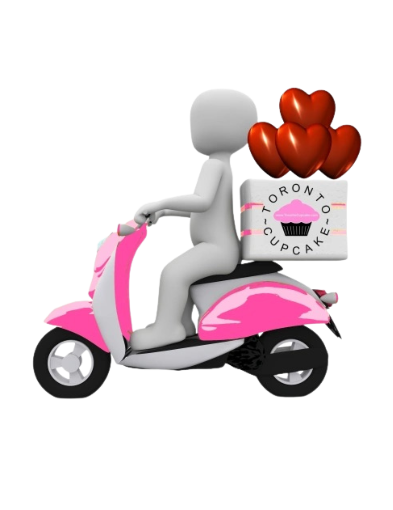

Welcome to Toronto Cupcakes!
Celebrating our 13th year of providing Canada's most delicious cupcakes for business meetings, birthdays, weddings, or for no other reason than because.
See our cupcakesAbout Us
Toronto Cupcake was created by Michelle Harrison so she could pursue her love of baking. A lifelong baker, inspired by her mother, Michelle opened Toronto Cupcake in August 2010 as one of Canada's first gourmet cupcakeries. We are driven by loving what we do and what we make everyday. We get to use the finest ingredients to make what we believe are the tastiest treats around. And.. we love the idea that our treats are making people happy.
Cupcakes
Vanilla Cupcake
Chocolate Cupcake

Strawberry Cupcake

Neapolitan Cupcake

Moist Vanilla Cupcake
Champaine Cupcake
Delivery
Click below to start ordering for delivery.
Click here to orderupcake delivery Toronto and GTA. Our cupcake delivery service is available 7 days a week and covers approximately 80km surrounding Toronto. Sending cupcakes has never been easier. Most deliveries can be made on the same day you order. If you need a delivery to a location that is outside of downtown Toronto we require notice at least the night before. Morning deliveries are typically for M** postal codes. Order three dozen or more and your delivery to downtown Toronto is free or greatly reduced to other locations. We deliver to: Oakville; Auroa; Markham; Scarborough; Vaughn,; Ajax; and Pickering to name a few. Delivery fee is based on the delivery location postal code and in special cases, time of day.